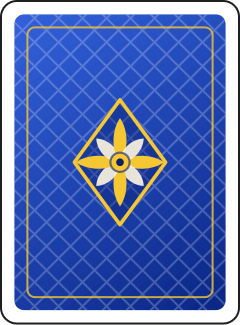
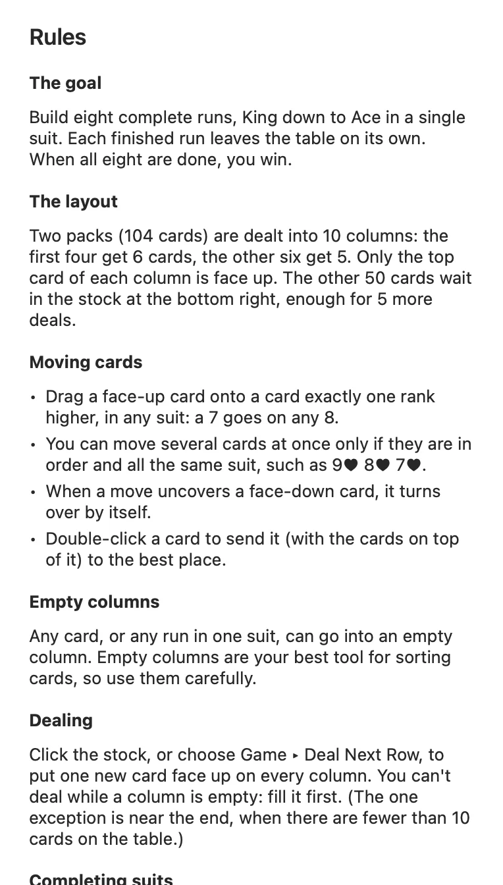
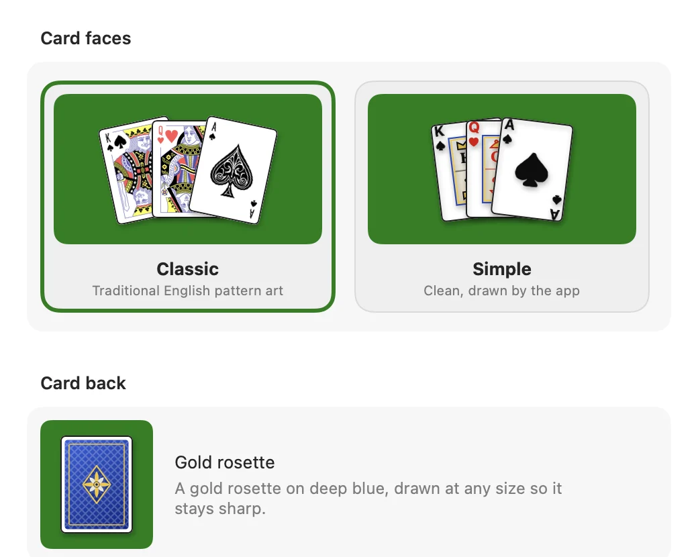
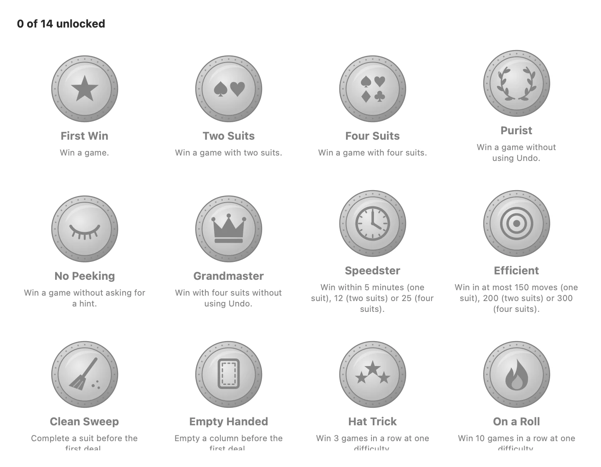

Windows XP is gone. Your favourite card game does not have to be.
Many solitaire apps now come with banners, nagging timers and coins to buy. This one is the game as you knew it: ten columns, two packs, a stock of fifty cards and a score that starts at 500.

Features
Everything you liked, and a few things XP never had
Rules you already know
One, two or four suits. You start with 500 points, pay one for every move and earn 100 for each finished suit, exactly like XP.
Deals you can win
Turn on winnable deals and every new game is one the built in solver has already beaten.
Undo as far as you like
Go back to the first move and redo what you undid, or pick classic XP undo for a stricter game.
Fourteen achievements
From your first win to four suits without a single undo. A banner slides in when you earn one, and your statistics keep every streak.
Classic card art
Traditional English pattern faces by Dmitry Fomin and a gold rosette back, or a clean simple set drawn by the app.
Ten columns. Two packs. One calm hour with nothing in the way.
A real Mac app
Native menus, settings and help
Keyboard shortcuts for every command, full screen, a help window with the rules and the scoring, and settings that apply the moment you change them.

Help built inRules, scoring, tips and every shortcut, one press of ⌘? away.

See your cards before you chooseSettings show the faces and the back exactly as they appear on the table.

Something to aim forBadges stay grey until you earn them, then turn gold with the date.
How it works
Playing in three steps
1
Download
Get SpiderSolitaire.zip from the latest release on GitHub, open it and drag Spider Solitaire into Applications.
2
Open it once by hand
The first time, right click the app and choose Open, then Open again. macOS remembers your choice.
3
Play
Drag cards, click the stock to deal and press ⌘T for a hint. Your game is saved when you quit.
Why macOS asks the first time
The app is signed ad hoc, not with a paid Apple Developer ID, so Gatekeeper cannot confirm who made it and blocks a plain double click. Any of these lets it open:
Right click Open. In Applications, right click Spider Solitaire, choose Open, then Open in the dialog.
Open Anyway. After a blocked attempt, go to System Settings, Privacy & Security, scroll down and click Open Anyway.
Terminal. Remove the quarantine flag that macOS added to the download:
Every line of the game is on GitHub. Read it, build it yourself or fork it.
200+
Automated tests
The rules, the scoring, undo and redo, the solver and the update check are tested on every change.
SHA256
Checksummed releases
Each release is built by GitHub Actions from a tagged commit and ships with a checksum file next to the zip.
Questions
Frequently asked
Is Spider Solitaire really free?
Yes. There are no ads, no purchases inside the app and no account. The source code is open under the MIT licence.
Which Macs does it run on?
Any Mac with macOS 14 Sonoma or later. The download is a universal app for Apple silicon and Intel Macs.
Why does macOS warn me the first time I open it?
The app is signed ad hoc rather than with a paid Apple Developer ID, so Gatekeeper cannot check who made it. Right click the app, choose Open, then confirm. You only do this once. More ways to open it
Does it collect any data?
No. The only network request is the optional update check, which reads the public list of releases on GitHub at most once a day. You can turn it off in Settings, General.
Does it work offline?
Yes. Everything runs on your Mac. Without a connection the update check simply waits for the next day.
How close is it to the Windows XP version?
The rules, the scoring, the dealing rule for empty columns, hints, statistics and the three difficulties all follow XP. Redo, winnable deals and achievements are new, and you can switch undo to the classic XP behaviour.
Can every game be won?
Not every random deal. Turn on Only deal winnable games and each new game is one the built in solver has already won.
How do I update it?
Choose Spider Solitaire, then Check for Updates. If a new version exists, Download saves it to your Downloads folder and you replace the app in Applications.
How do I uninstall it?
Drag the app to the Trash. Your saved game and statistics live in the SpiderSolitaire folder inside Library, Application Support, which you can delete too.
Deal yourself a game tonight
Free, with nothing to sign up for and nothing to cancel. If it is not for you, drag it to the Trash.
Cormorant Garamond by the Cormorant Project Authors and Manrope by the Manrope Project Authors, both under the SIL Open Font License 1.1 and served from this site. Icons from Phosphor, MIT licensed.